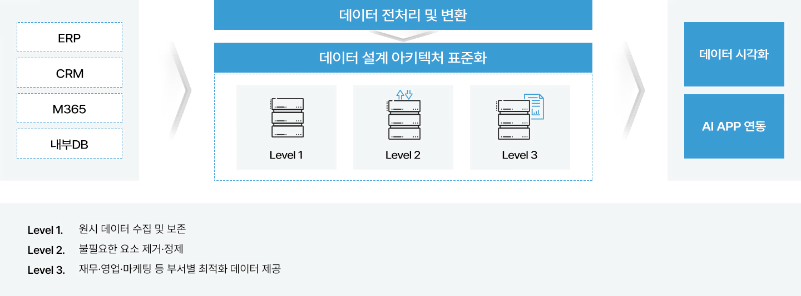
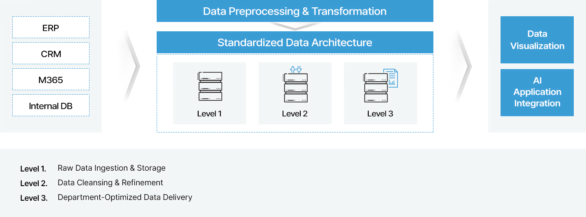
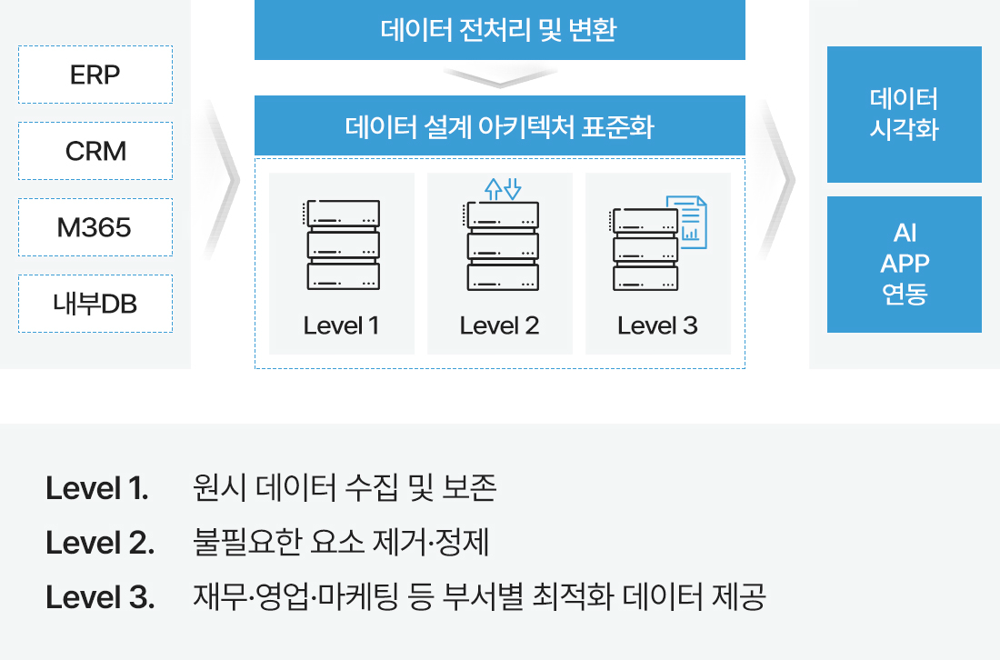
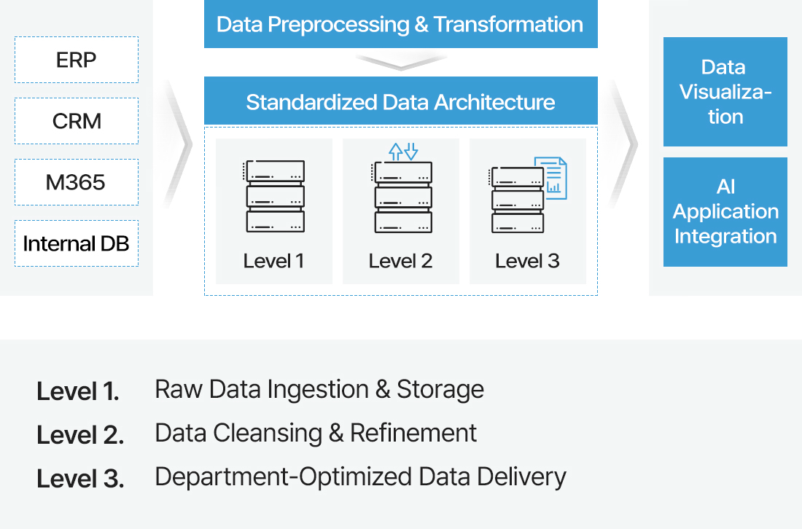

WIKL (Woongjin Insight Knowledge Link)
WIKL은 웅진이 글로벌 클라우드 및 AI 기술을 기반으로 설계한 차세대 엔터프라이즈 플랫폼입니다. 체계적인 문서 관리부터 데이터 통합, AI 기반 인사이트 도출, 실행까지 기업의 핵심 업무 흐름을 하나의 여정으로 연결합니다. WIKL을 통해 데이터와 지식을 실제 업무 성과로 전환할 수 있는 기반을 확보할 수 있습니다.
WIKL Insight AI 기반 지식 관리 시스템
WIKL Insight는 기업의 방대한 문서 및 데이터를 AI를 통해 체계적으로 관리하는 지식관리시스템 (Knowledge Management System) 입니다. AI를 통해 자료에 근거한 답변과 요약, 보고서·제안서 형태의 결과물까지 손쉽게 확인할 수 있습니다.
검색으로 유연한 정보 검색
통한 원스톱 검색, 요약 및 생성
접근 권한 관리로 보안 강화
기업 지식자산 가치 및 활용도 증대
WIKL Insight는 필요한 정보를 찾는 데 쓰이던 시간을 줄이고, 업무 맥락에 맞는 지식을 바로 활용할 수 있는 환경을 제공합니다.
기업 지식 자산 강화
- 기업 차원의 지식 자산 축적 및 유실 방지
- 주기적인 문서 및 데이터 업데이트로 최신성·정확성 유지
지식 탐색 시간 단축
- 필요 문서를 즉시 확인하여 문서 탐색 과정 단축
- 업무 시작 단계에서 소요되는 정보 탐색 시간 절감으로 업무 속도 향상
지식 활용 극대화
- Document Intelligence (DI) 서비스를 이용한 문서 변환
- 누적된 문서 바탕의 보고서 양식 구조화
WIKL Fabric | 차세대 데이터 통합 플랫폼
WIKL Fabric은 기업 내 분산된 데이터를 하나로 통합하는 데이터 플랫폼입니다. 전사 데이터를 데이터 레이크로 집결하고, 표준 아키텍처를 기반으로 데이터 관리와 분석의 일관성을 제공합니다.




AI 시대에 최적화된 데이터 플랫폼
WIKL Fabric은 표준화된 데이터 아키텍처를 기반으로 높은 데이터 품질과 신뢰도를 제공합니다.
통합 데이터 거버넌스 구현
- 전사 데이터에 대한 관리 기준 및 흐름 정립
- 데이터 품질, 보안, 접근 권한을 일관적으로 관리
데이터 활용도 향상
- ERP, CRM 등 조직 내외부의 다양한 데이터를 통합된 채널에서 접근
- 데이터 시각화 및 분석을 위해 소요되던 데이터 준비 시간 단축
AI 활용 기반 확보
- 표준화된 데이터 구조 바탕의 AI 분석, 자동 리포팅, 예측 분석 등 고급 활용 가능
- 단기적인 분석을 넘어, 지속적인 AI 활용 전략 수립
WIKL AI | AI 도입을 위한 통합 서비스
WIKL AI는 업무에 바로 활용 가능한 AI 서비스, 이를 안정적으로 실행하는 AI 인프라, 그리고 기업 전략에 맞게 선택·조합할 수 있는 LLM 모델 레이어까지 AI 활용에 필요한 모든 요소를 통합적으로 제공합니다.
AI 서비스
다양한 업무 수행
인프라
위한 클라우드 환경 조성
LLM 모델
AI 모델 조합 가능
AI-Driven 비즈니스 실현
WIKL AI를 통해 기업의 AI 활용을 고도화하고, 생산성을 극대화할 수 있습니다.
업무 처리 속도 향상
- 자료 검색, 분석, 문서 작성 등 업무 단계의 자동 수행을 통한 처리 시간 단축
- 업무 흐름 전반의 효율성 향상
업무 품질의 표준화
- 정해진 기준과 프로세스에 따른 업무 수행 자동화로 결과 편차 최소화
- 개인 의존적 업무 방식에서 조직 표준 기반 업무 체계로 전환
실시간 데이터 인사이트 확보
- 다양한 데이터의 즉각적 분석 및 해석을 통한 업무 상황 기반 인사이트 상시 제공
- 정적 리포트 중심 분석에서 벗어난 실시간 의사결정 환경 구축
WIKL IoT | 현장 운영 및 제어 고도화
WIKL IoT는 산업 현장에서 발생하는 데이터를 실시간으로 수집·분석해 운영 효율을 높이고, 의사결정을 자동화하는 시스템입니다. 단순 모니터링을 넘어, 설비 상태 예측, 이상 감지, 공정 최적화까지 이어지는 데이터 기반 현실 혁신 환경을 제공합니다.
데이터 수집
분석 및 예측
현장 제어
환경 최적화
AI를 통한 현장 운영 혁신
WIKL IoT를 통해 경험과 사후 대응 중심의 운영 방식에서 벗어나, 데이터 기반의 예측·선제적 운영 체계로 전환할 수 있습니다.
현장 운영 가시성 확보
- 현장 설비 및 운영 상태의 데이터 기반 통합 관리로 운영 현황의 직관적 파악 가능
- 정보 부족으로 인한 의사결정 지연 감소 효과 기대
운영 리스크의 사전 관리
- 이상 징후의 조기 인지를 통해 설비 장애 및 운영 중단에 대한 선제적 대응 가능
- 예기치 않은 사고 발생 및 다운타임 최소화 효과 기대
운영 효율 및 비용 구조 개선
- 운영 데이터 분석을 기반으로 비효율적 운영 요소 및 불필요한 비용 발생 요인 제거 가능
- 장기적인 운영 효율 향상 및 비용 절감 효과 확보
글로벌 기술 기반의 안정적 구축 및 운영 역량
웅진은 주요 글로벌 클라우드 서비스의 공식 파트너로서, 대규모 기업 환경에서도 검증된 아키텍처와 운영 기준을 바탕으로 안정적인 서비스를 제공합니다. 다양한 산업 환경에서 축적한 구축·운영 경험을 통해, 안정성, 확장성, 보안을 모두 고려한 서비스 품질을 보장합니다.
AI 기술 전문성
- AWS/Azure 기반 AI 기술 구현 경험 다수
- 복잡한 업무 요구사항을 AI 기반 자동화 솔루션으로 구현 가능
멀티 클라우드 통합 역량
- AWS ↔ Azure 간 안전한 연동 및 최적의 클라우드 네트워크 아키텍처 설계 경험
- 보안정책 및 Private Endpoint 구축을 통한 안전한 서비스 운영 역량 보유
AI 프로젝트 운영 노하우
- 다양한 산업에 걸친 AI 업무 혁신 프로젝트 성공 사례 보유
- 실증된 성공사례를 바탕으로 AI 프로젝트 관리 및 최적화 역량 보유
인증 받은 글로벌 클라우드 파트너
- AWS Advanced Partner
- Microsoft Gold Partner